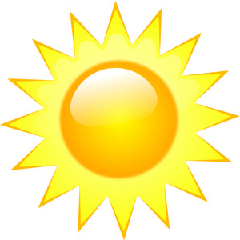
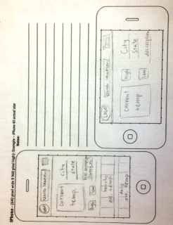
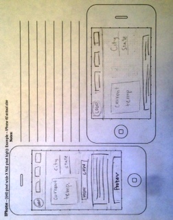

Franklin, Idaho
High: 90°F | Low: 66°F
Summary: Sunny
Precipitation: 0
Wind: Southwest 1-5 mph
Longitude: -111.803757
Latitude: 42.011902


There were a couple things that I decided to change when I started to acually make the Franklin Weather Site. For some reason, when I drew it out it seemed like I could fit a lot more information on. However, upon building the site, I felt like certain things needed to be bigger and there were also other pieces of information that were not necessary.
Some of the changes include putting the three locations instead of a search bar in the navigation, making the high and low temperatures bigger and putting the description underneath.